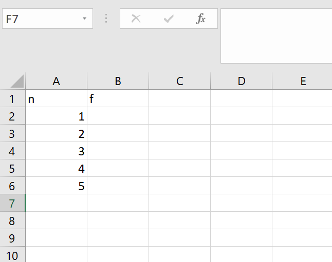
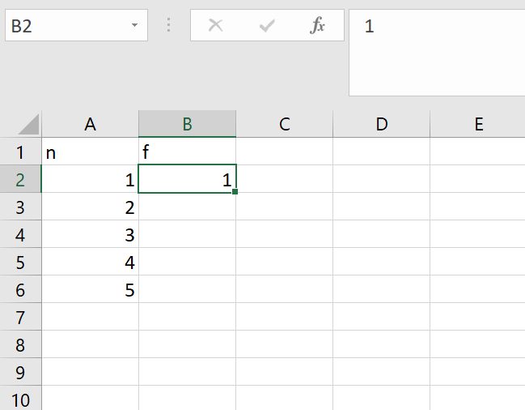
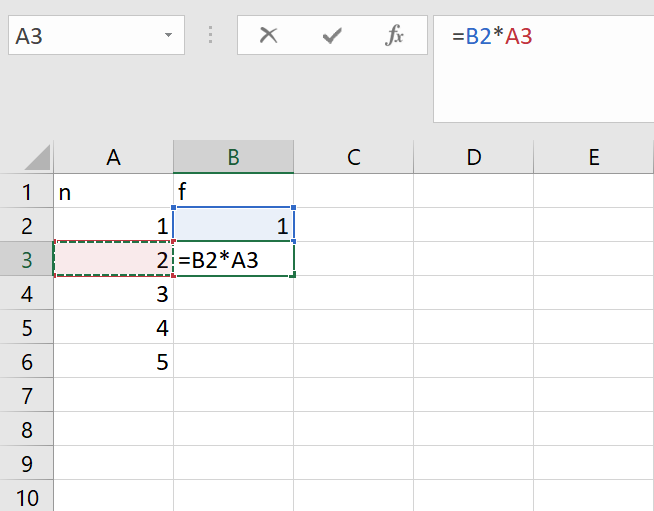
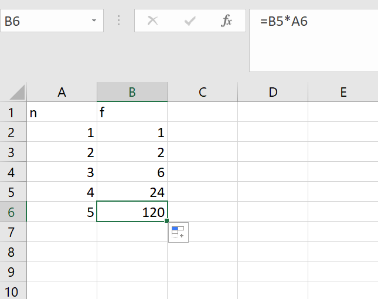
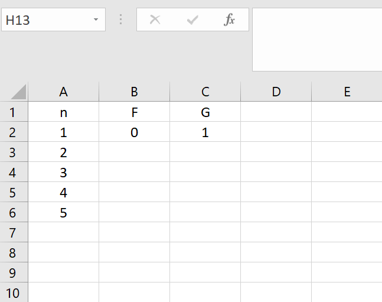
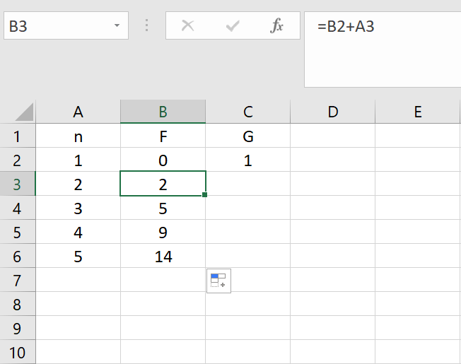
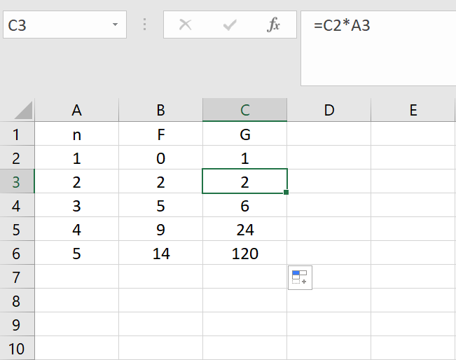
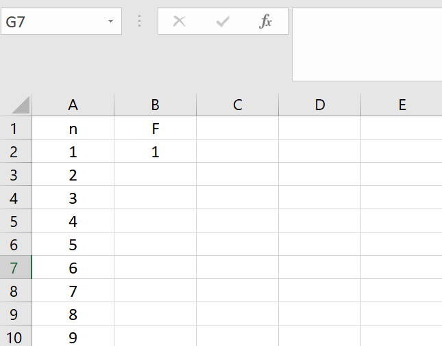
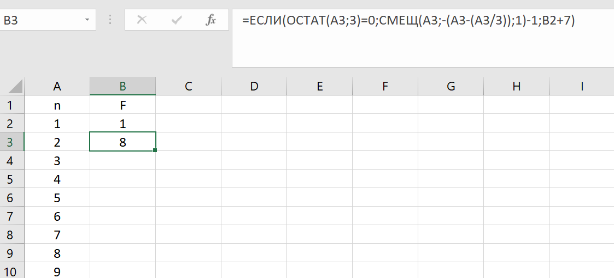
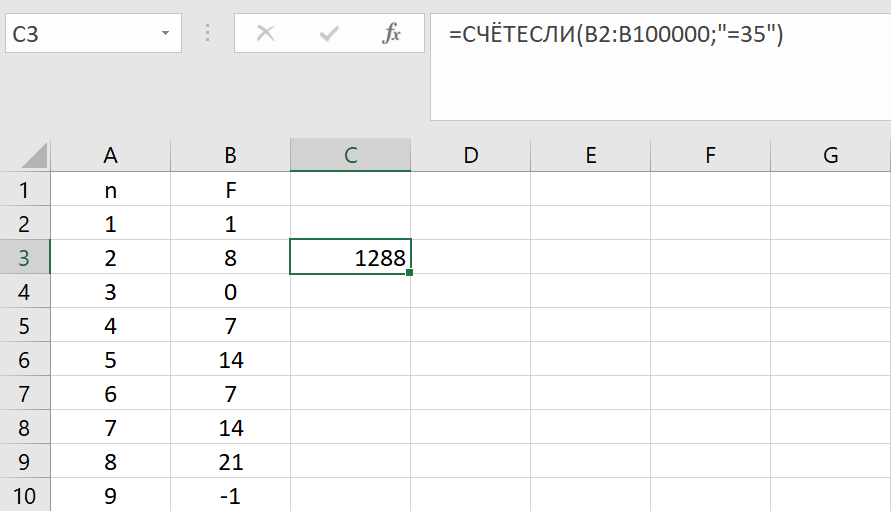

Задание №1
Алгоритм вычисления значения функции F(n), где n – натуральное число, задан следующими соотношениями:
F(1) = 1
F(n) = F(n–1) * n, при n >1
Чему равно значение функции F(5)? В ответе запишите только натуральное число. |
Решение:
- Для начала нужно будет открыть Excel и построить подобную таблицу.

Заполняем n до того значения, которого нам нужно найти в задании.
- Теперь нужно внести в таблицу то, что нам дано. В данном случае дано F(1).

- Если n>1, то F(n)=F(n-1)*n. Нам нужно ввести такую команду, которая будет предыдущее F(n-1) умножать на n, эта команда будет выглядеть так

Теперь просто растяниваем команду до предельного значения n.

Нужное нам значение - F(5), записываем ответ.
Ответ: 120
Задание №2
Алгоритм вычисления значения функции F(n) и G(n), где n – натуральное число, задан следующими соотношениями:
F(1) = 0
F(n) = F(n–1) + n, при n >1
G(1) = 1
G(n) = G(n–1) * n, при n >1
Чему равно значение функции F(5) + G(5)?
В ответе запишите только натуральное число. |
Решение:
- Эта задача отличается тем, что у нас появлется вторая функция G, но принцип решения остается таким же. Заполняем таблицу.

- Если n>1, то F(n)=F(n–1)+n. Нужно ввести команду, которая будет к предыдущему F(n-1) прибавлять n, вводим и растягиваем эту команду.

- Если n>1, то G(n)=G(n–1)*n. Аналогично вводим команду, которая предыдущее G(n-1) будет умножать на n, вводим и растягиваем эту команду.

- В ответ нам нужно записать F(5)+G(5), то есть 14+120, что равно 134. Записываем ответ.
Ответ: 134
Задание №3
Алгоритм вычисления функции F(n), где n – натуральное число, задан следующими соотношениями:
F(n)=1, при n<2,
F(n)=F(n/3)–1, когда n>=2 и делится на 3,
F(n)=F(n–1)+7 , когда n>=2 и не делится на 3.
Назовите количество значений n на отрезке [1;100000], для которых F(n) равно 35.
|
Решение:
- Заполняем таблицу, где n будет в пределах от 1 до 100000. Чтобы это сделать быстро: Заполнить→Прогрессия→По столбцам→предельное значение:100000. Вводим известные данные.

- Проверять, делится ли n на 3, мы будем через эту команду: ОСТАТ(n;3). Действие F(n/3) мы будет записывать следующим образом через команду СМЕЩ("Столбец с n";-("столбец с n"-("столбец с n"/3));1). Общая команда будет выглядеть следующим образом:

Растягиваем эту команду на весь лист.
- Теперь нам осталось посчитать количество F(n), которые равны 35. Для этого используем команду СЧЁТЕСЛИ:

Записываем ответ.
Ответ: 1228
Назад |